--点击左上蓝字“高小猫”关注我---
微信号：gaoxiaomao88
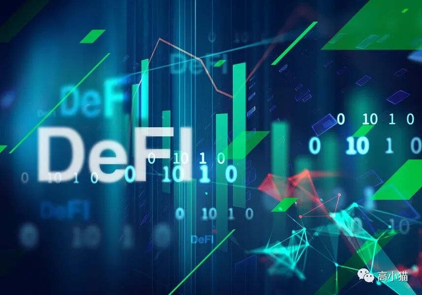
过去的两周区块链资产震荡得非常厉害，而且今天因为美国监管层表示要更多地监管数字货币市场，币市应声下跌。
不过这种事情当年在9/4事件的时候早就发生过了，一般这种时候都是上车的好机会。不过短期的趋势谁也看不清，我觉得也没必要多花心思在上面。
我的主要精力还是放在更多地了解Defi最近的动态上面。前几周的文章介绍了Cover Protocol，最近几周又有Basis等等稳定币的项目。这两周开始热点似乎开始转向了去中心化的期权，期货这些衍生品。在这个领域里Defi的项目更加繁多，而且也更加复杂，我一篇文章肯定是介绍不完的，所以就简要把几个项目都过一遍，有兴趣的小伙伴可以自己去玩一下。
期权
Hegic
(https://www.hegic.co/)
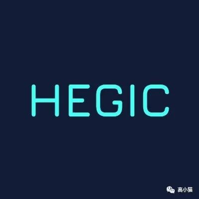
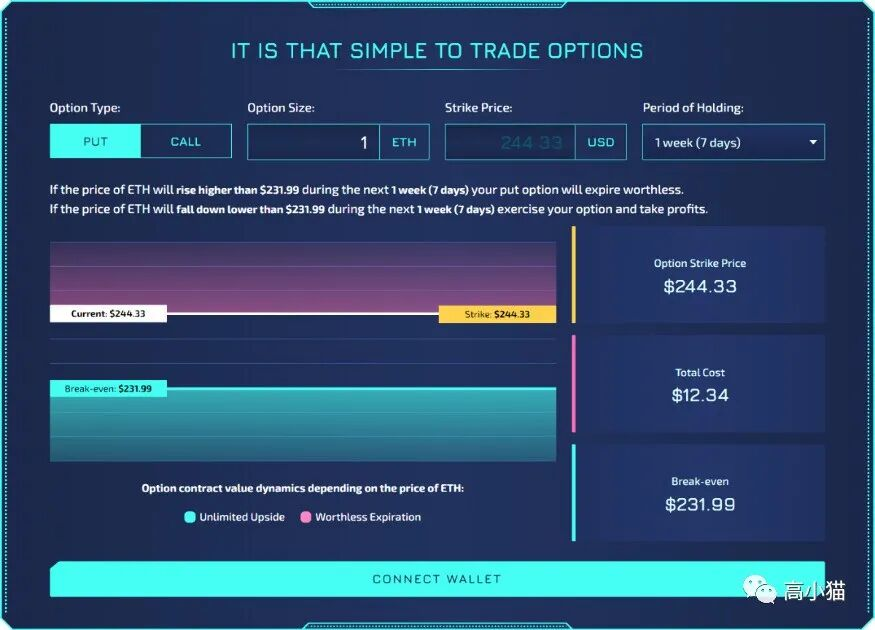
hegic是我最早了解的Defi上的期权项目。它允许用户在上面购买BTC以及ETH的call以及put option，不过这个option的strike price只可以选择当前价格附近的价格。
一开始我很奇怪，它允许用户买option，那卖option的对手盘是怎么形成的呢？
后来我发现这个合约里还有一个抵押池。用户可以把自己的ETH或者BTC抵押在合约里面，然后hegic会自动帮你用这些抵押池里的资金帮你卖出option。所以如果卖option亏钱了，这个亏钱的部分是抵押池里的资金共同承担的。比如前几周市场波动比较大的时候，抵押池最多的时候亏损了10%。
不过我觉得长期来说参与这个抵押池还是划算的。我看了一下在Hegic上面call option的价格，拿它和Deribit （现在全世界最大的BTC，ETH的中心化期权交易平台）上面的价格做了一个比较。平均来说似乎Hegic上面的option价格要比Deribit上面贵30-50%。假设Deribit这个市场是有效的，买卖双方赚的钱是差不多多的话，持续以高价来卖option，肯定会赚的概率更大一点。
除此以外，目前参与抵押池还可以获得额外的Hegic代币奖励，年化大约有200-300%。最近Hegic代币的价格也涨得不错，所以我觉得是一个用BTC，ETH获得额外收益的好去处。当然要记得，参与的过程也是卖出option的过程，所以要清楚参与的风险。
Opyn
(https://v2.opyn.co/#/trade)
(https://v1.opyn.co/#/sell)
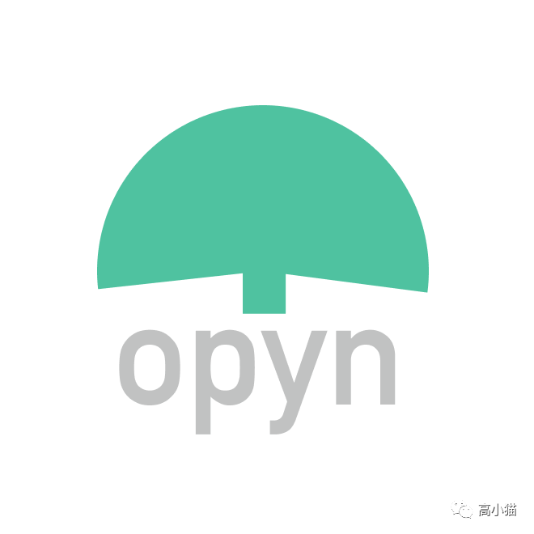
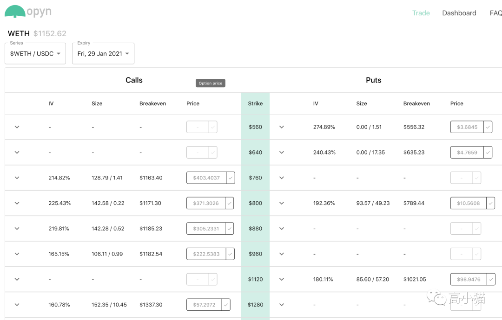
Opyn是另外一个可以购买ETH和BTC call和put option的地方。它相比起Hegic来说在strike price上会有更多的选择。不过它上面option的价格似乎要比hegic的更加贵一点点。
Opyn有两个版本，v1不仅可以买option，也可以卖出option赚取权利金。v2里卖出option我找了一圈没有找到，不知道是怎么实现的。
期货
Perpetual Protocol
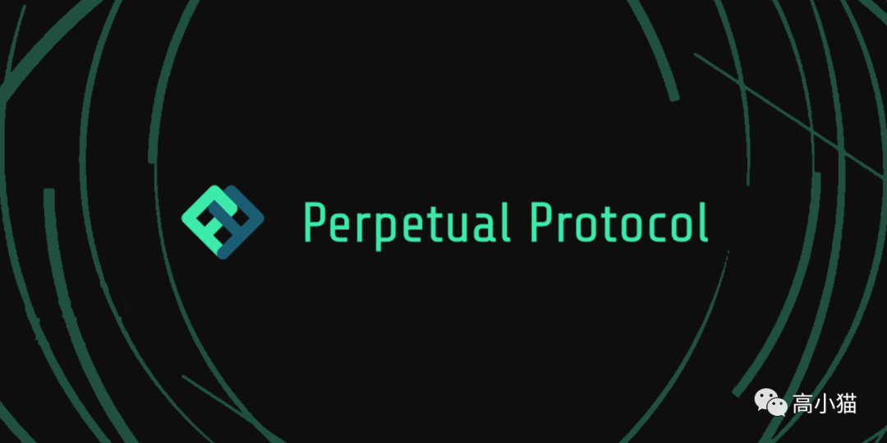
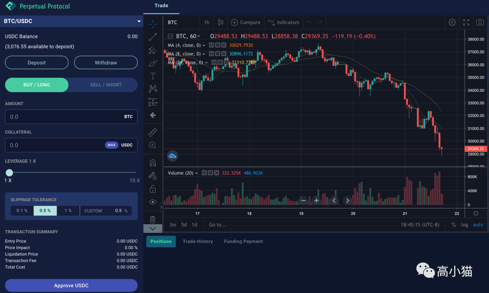
Perp这个项目是我最早关注的区块链上的期货项目，从它最早在测试网上launch的时候就开始关注了。它的代币一直可以和USDC结对，在balancer上提供流动性以后挖矿，年化一直在100%以上，所以我稍微参与了一些。最近这个币翻了3倍，我就把本金抽出来了。
所谓的期货，就是我们通常说的那种合约。币圈经常有人倾家荡产，大部分玩的就是高倍合约这个东西。Perp上最高可以开10倍的合约，然后目前支持的币种除了BTC和ETH，就是YFI和DOT。然后上面充值用的是USDC。我觉得它做的界面很好看，和bitmex很像，所以蛮看好的。
dydx
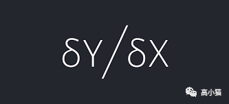
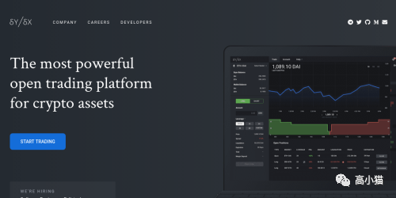
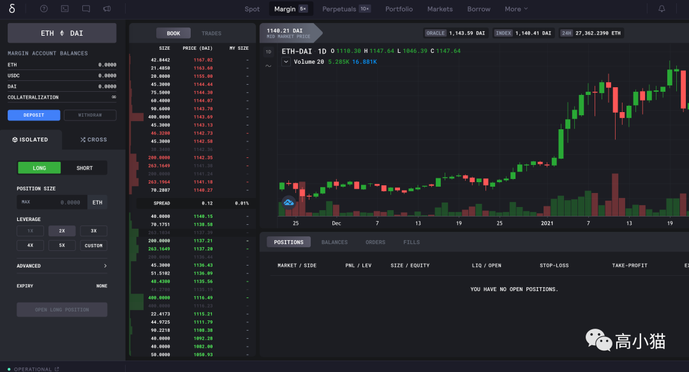
dydx这个项目应该算是目前最大的期货项目了。它也久负盛名，很多项目被hack的过程当中，都利用到了dydx的合约，可见dydx的有用程度（攻击的时候都要调用它）和可靠性（在历次攻击中它都没有损失，说明没有被发现漏洞）。
Dydx上可以开5倍的杠杆，同时可以开10倍的永续合约。在这个上面，当你的交易的资金量很低的时候，交易费用会非常高。因此一般用这个合约比较多的都是大户。一般20个ETH以上才会在这个上面开单，那基本就是2万美金起步了，门槛非常高。
合成资产
Synthetix Network
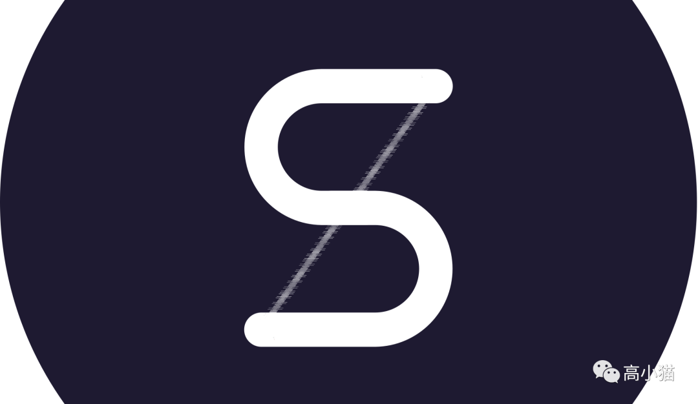
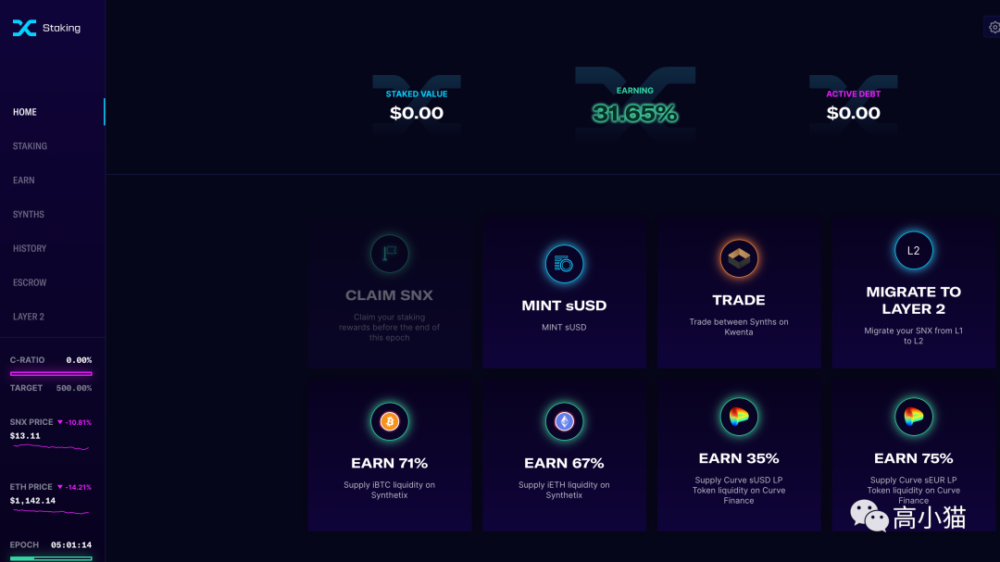
Synthetix Network是一个合成资产项目。为什么把它归到衍生品类呢？因为这些合成资产可以是任何资产，包括任意资产的期权，期货，甚至我们公开市场上的股票，都可以合成。
它的本质就是用一定的抵押物来追踪某个公开指标，然后根据这个公开指标的价格浮动来减少或者增加你的抵押物。因此在SNX上面你可以做空做多任意东西。
不过SNX的问题一直以来就是门槛过高。而且合成资产所用的抵押物是SNX，所以如果SNX暴跌的话，可能需要追加大量的SNX作为抵押物，会对于交易人来说非常麻烦。而且SNX合成资产的时候抵押的资产要求是合成出来资产的7倍。也就是你抵押7美金的SNX，才能合成出来1美金的合成资产。这对于SNX的广泛应用造成了很大的障碍，这样的合成资产的流动性也会有很大的问题。
不过SNX毕竟是Defi上面唯一一个可以这样做的龙头项目，而且最近他们和Curve合作，使得稳定币与非稳定币之间超低滑点的交易成为了可能，让我们看到这个项目的巨大前景。
加杠杆的流动性挖矿
Alpha Hormora
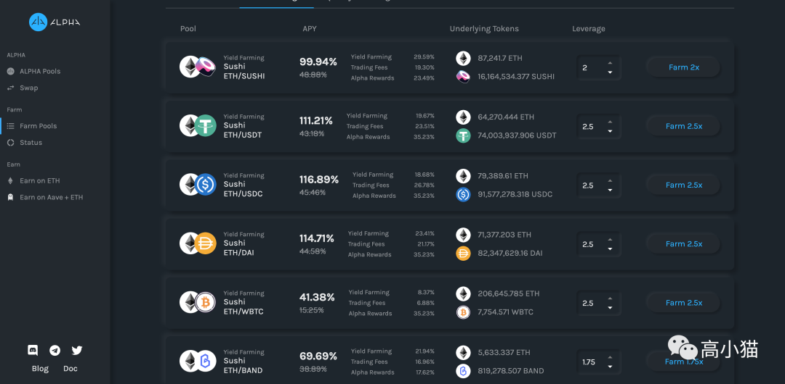
最后来聊聊加杠杆的流动性挖矿。在Defi上流动性挖矿已经火了大半年了，但是我们常常碰到的问题是流动性挖矿需要一对资产，而我们手上只有其中的一种资产。Alpha Hormona所做的就是让你拿出一种资产，然后帮你用ETH和它配对，然后放入流动性挖矿池子里挖。由于你实际流动性挖的资产要比你提供的资产要更多，所以年化会更高。同时出借ETH资产的人可以用ETH获得无损的较高的年化收益。最终各取所需。
以上就是我最近在关注的几个Defi项目啦。每个都介绍的比较简略，而且一些我提到的概念，比如滑点，流动性挖矿等等都没有介绍，如果大家感兴趣的话我可以再写一篇文章谈谈。
大家下期再见。